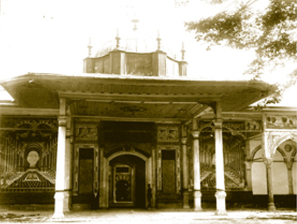
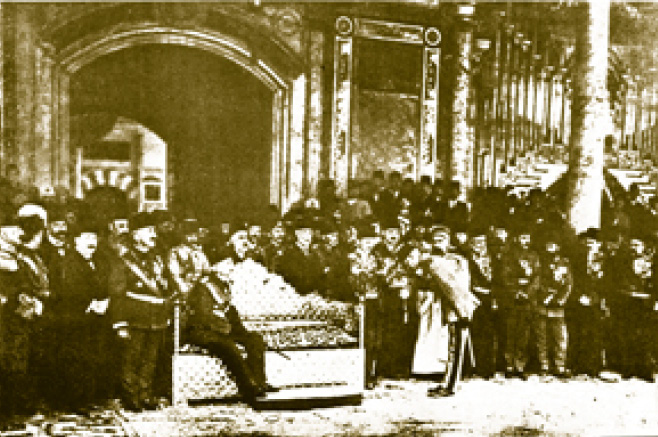
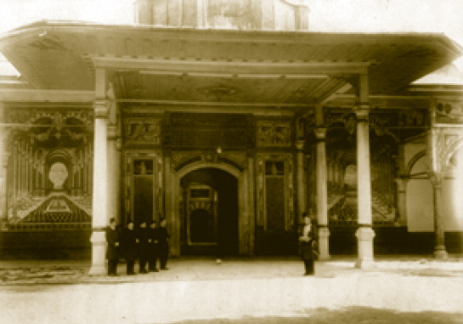
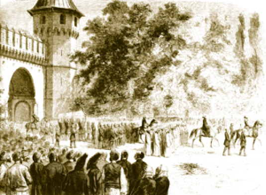
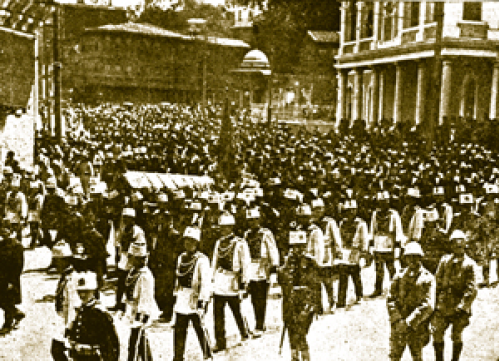
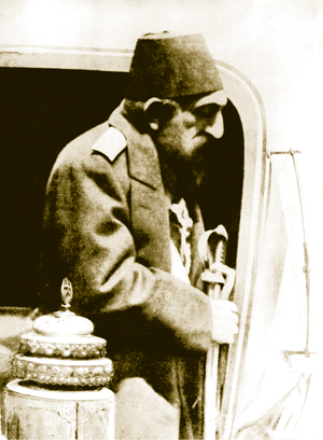
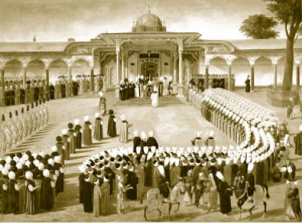
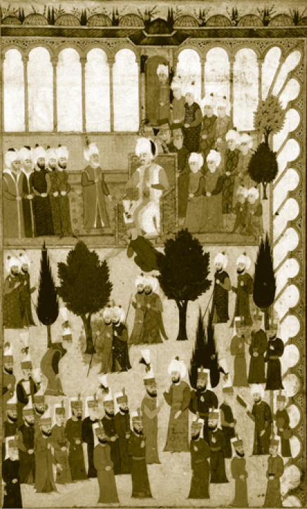

BÂBÜ’S SAADE
Saadet Kapısı denilen bu yer padişahın hususi ikametgâhının başlangıcıydı. Topkapı Sarayı’nda ihtişamın kapısıdır. Müzeyyen görünüşüyle imparatorluğun ve Osmanlı padişahının hâkimiyetini simgeler. Bâbü’s saade, sarayın eski yapılarındandır. İlk olarak Fatih Sultan Mehmed tarafından yaptırılan kapının tam önündeki dört sütun daha sonra kaldırılmış ve kapıya yeni bir biçim verilmiştir. Kapı kemerinin üstünde 1774’te yapılan tamir kitabesi bulunur. Üst tarafta ise Sultan II. Mahmud’un hattı ile yazılmış Besmele vardır. Kemerin kilit taşında Hattat Rakım Efendi’nin çektiği Sultan II. Mahmud tuğrası bulunur. Kapının iki yanında yer alan tuğra istifli hatlar ise Sultan I. Abdülhamid’den bahseden kasidelerdir. Bâbü’s saade’de nefis kalem işi süslemeler vardır. Eski fotoğraflarda kapının iki tarafında da aynı şekilde derinlikli bir koridor resmi olduğu görülmesine karşın daha sonraki yıllarda yapılan restorasyonlarda bu resimler kapatılmıştır. Bâbü’s saade de Bâb-ı Hümâyûn ve Bâbü’s selam gibi iç içe iki kapılıdır. Birinci kapı ile ikinci kapı arasında koğuş ve dairelere açılan kapılar vardır. Kapının sağ tarafında uzanan mekân Bâbü’s saade Ağası Dairesi, soldaki ise Ak Ağalar Koğuşu’dur. Bâbü’s saade’nin Arz Odası’na bakan ikinci kapısının üstünde Sultan III. Ahmed’in hattıyla “Re’sü’l-hikmeti mehâfetüllah / Hikmetin başı Allah korkusudur.” yazmaktadır. Altında kemer üzerinde ise:
Hakan-ı sahib kudretin
Devrinde âlem ber-murâd
Dergâh-ı vâlâ şevketi
Yâ Rabb ola dâim küşâd
“Kudret sahibi hakanın
Devrinde âlem muradına ermiş
Şevketli yüce dergâhı (kapısı)
Ya Rab! Daim açık olsun.” yazısı yer almaktadır.
Yine kapının iki yanında Osmanlı padişahlarının adları ve cülûs tarihlerinin yazılı olduğu dairevi levhalar vardır.
Bâbü’s saade gün boyunca açık tutulurdu; ancak bu kapı gerek saltanatı gerekse halifeliği simgelediği ve padişahın ikametgâhının başlangıcı olduğu için rastgele kullanılamazdı. Saray hizmetlileri, Enderun avlusuna girecekleri vakit Araba Kapısı ve Kuşhâne Kapısı güzergâhını kullanırlardı. Enderun avlusu padişahın evi sayıldığından -Arz Odası’na geçişler hariç- sadrazamlar dahi buradan öteye müsaadesiz geçemezdi. Bâbü’s saade sarayın en iyi korunan kapısıydı.

Sarayın müze olarak kullanıldığı ilk zamanlarda Babü’s Saade.
Kapının iki yanında bulunan panolardaki resimler günümüze ulaşamamıştır.
Burayı Kafkasya’dan devşirilen ak hadımağalar korurdu ki bunların içinde Gazanfer Ağa gibi, hayır sahibi etkili saraylılar veya Hadım Ali Paşa gibi, Hadım Sinan Paşa gibi büyük komutanlar da çıkmıştır. Enderun’un ak hadımağaları bu ocakta Enderun iç oğlanlarının eğitim ve inzibatından sorumluydular. Enderun yanı sıra Harem denilen bölüm de bi-küşad bölümdür ve padişah konutunun kısımlarıydı. Bâbü’s saade’nin önüne Osmanlı tahtı çıkarıldığı vakit bu ya bir Cülûs Töreni’ydi ya da normal Muayede Töreni’ydi. Bazı ahvalde bir ayaklanma ve hoşnutsuzlukta orta avluya alınan yeniçerilerle görüşmek için padişah davet edildiğinde taht yine çıkardı. Fakat padişah orada oturmadığı için bunun adı “Ayak Divanı” diye bilinirdi. Bugün bazı yaz geceleri “Saraydan Kız Kaçırma” gibi opera temsillerinin yer aldığı bu güzel kapı, estetik görünüm, şüphe yok ki Osmanlı tarihinin acı, tatlı, muhteşem ve hatta yüz kızartıcı olaylarının yer aldığı bir yerdir. Sultan IV. Murad gözlerinin önünde sevgili veziri Hafız Ahmed Paşa’nın ve Musa Melek’in katledildiğini daha doğrusu parçalandığını burada seyretti. Çocuk padişah içindeki intikam ateşini delikanlılığına eriştiği vakit burada söndürdü. Topladığı ulema ve askerlere tehdit dolu nutkunu burada savurdu. “IV. Murad” adlı Turan Oflazoğlu’nun temsilinde, tragedyasında bunu görmek mümkündür. Osmanlı İmparatorluğu’nun bu genç padişahı ve mareşalinin trajedisi, hayatındaki çelişkiler ve feci manzaralar, bu imparatorluğun 17. yüzyıl tarihini de ifade eder.
Sancak-ı Şerif’in Dikildiği Yuva
Hırka-i Saadet Dairesi’nde saklanan Sancak-ı Şerif sefer öncesinde ve mühim merasimlerde çıkartılır ve Bâbü’s saade önündeki yuvasına dikilirdi. Sancak, Peygamber Efendimizin bayrağını simgelediği için sancağın dikildiği yere ayak basılarak saygısızlık yapılır endişesiyle yuvanın üzerine bir taş konulurdu. Hâlen mevcut bulunan taş, o taştır. Bu, Osmanlı dinî hassasiyetinin özgün bir misalidir.
Bâbü’s saade Önünde Yapılan Merasimler
Osmanlı Sarayı’nın ve hanedanının geleneklerinde değişmeyen bazı temel unsurlar vardır. Yönetim merkezinin Topkapı Sarayı’ndan Dolmabahçe ve Yıldız’a taşındığı dönemlerde dahi bazı temel merasimler Bâbü’s saade önünde yapılırdı. Başlıcaları cülûs, cenaze, bayramlaşma, sancak merasimleri idi.
Yeni Padişahın Tahta Çıkışı- Cülûs Töreni
Cülûs Arapça bir kelimedir ve “oturmak” manasına gelir. Bir padişahın vefatı veya tahttan indirilmesi neticesinde yeni padişahın, tahta çıkma törenidir. Bir manada şehzadelerden birinin padişah olma merasimidir. Cülûs, Bâbü’s saade önünde yapılan en mühim ve görkemli törendi. Sarayın kullanılmadığı dönemlerde dahi cülûs merasimleri bu baba ocağında yapılırdı. Sultan II. Bayezid’ın 1481’deki cülûsundan, Sultan Vahdeddin’in 4 Temmuz 1918’deki cülûsuna kadar cülûs törenleri burada yapılmıştır. İstisna olarak Sultan V. Murad, Sultan II. Abdülhamid ve Sultan V. Mehmed Reşad cülûsları Topkapı Sarayı’nda yapılmamıştır. Sultan I. Ahmed ve Sultan II. Mustafa’nın cülûslarında da devlet ileri gelenleri beklenmeden cülûs yapılmıştır. Sultan V. Mehmed Reşad için Harbiye Nezareti’nde (günümüzde İstanbul Üniversitesi Rektörlük Binası) merasim yapılmıştır.

Bâbü’s saade önünde son cülûs merasimi. Sultan Vahdeddin tahta çıkıyor (4 Temmuz 1918)
Cülûs merasimlerinin en hazini ise Sultan Vahdeddin’in cülûsu olmuştur. Kendini I. Dünya Savaşı’nın sonunda Osmanlı tahtında bulmuş olan son padişah, İstanbul’a dahi hükmedemez. Üstelik Osmanlı mülkünün yediği darbede de kimse onun fikrini sormamıştır. Kim ne derse desin son padişah hazineyi alıp gitmemiş, gittiği yerlerde de Türkiye devleti aleyhinde faaliyette bulunmamıştır. Bu, sürgündeki hanedanın bir ananesi ve takdire değer tavrıdır. Birinci Büyük Savaş’ın son zamanlarında Vahdeddin’in cülûs ettiği günlerde İngilizlerin ansızın uçurduğu uçaklardan elle bomba atılıyor, başkentte yangınlar çıkıyor, insanlar ölüyordu. Son padişah “Bugün şehri bombalamayacaklar.” demiş ve gerçekten de o gün yeni çıkan padişaha saygı olarak şehir bombalanmamıştır. Bu, Britanya monarşisinin yenilgi günlerinde dahi Türkiye imparatorluğuna duyduğu saygının bir göstergesidir.
Cülûs merasimi öncesi vefat eden padişahın naaşı yeni padişaha gösterilirdi. Böylece padişah dahi olsa bütün insanların sonunun nasıl olacağı hatırlatılmış olurdu. Ağabeyi Sultan V. Mehmed Reşad’ın naaşını gören Sultan Vahdeddin’in “Meğer saltanat ile teneşir arası ne kadar kısaymış.” dediği rivayet edilir. 18. yüzyılın ortalarına kadar Cülûs’un ilk ritüeli Hırka-i Saadet Dairesi’nde yapılır. Şehzade, bir yanında Darü’s saade ağası, diğer yanında silahdar ağa ile birlikte bu daireye götürülür; burada ilk olarak sadrazam ve şeyhülislâm yeni padişaha biat ederdi.

Bâbü’s saade önünde saray çalışanları
Akabinde saltanat alâmetlerinden olan Yusufî sarık taktırılırdı. Yusufî sarığın, Yavuz Sultan Selim tarafından Mısır’dan getirilmiş olup Hz. Yusuf’un sarığı olduğu rivayet edilir. Burada diğer devlet erkânı sırayla padişaha biat ederdi. Şeyhülislâm tarafından padişahın muvaffakiyeti için dua edilirdi. Samur erkân kürkü giydirilirdi ve yeni padişah aynı yerde iki rekât namaz kılardı. Ardından Bâbü’s saade önüne çıkardı. Burada alkışlar başlardı. Osmanlılarda alkışı bugünkü manada el çırpmak olarak düşünmemek gerekir. Alkış, köklü gelenekten gelen hep bir ağızdan söylenen dualar için kullanılan bir tabirdir. Yeni padişah Bâbü’s saade’den görününce alkışçı çavuşlar evvela:
“Aleyke Avnullah” (Allah’ın yardımı seninle olsun) diye alkış tutarlardı. Padişah kapıdan geçip tahta doğru yürürken “Uğurun açık olsun, ikbalin füzûn. Pâdişâhım devletinle çok yaşa.” diye alkış töreni yapılır veya dua edilirdi.
Yeni padişah ilk defa kurulan altın tahta oturunca bu sefer yüksek sesle: “Maşallah” alkışı duyulurdu. Ardından da Osmanlı kültürünün kendine has güzelliği ile padişaha tevazu sahibi olması konusunda ihtar edilirdi: “Mağrur olma Pâdişâhım senden büyük Allah var.”
Bu söz daha sonra çok yaygınlaşmış; “Gururlanma padişahım, senden büyük Allah var.” şeklinde bir atasözü hâlini alarak günümüze kadar ulaşmıştır. Mısır firavunlarının saraylarından çıkışlarında görevlilerin, “Sen bizim ilahımızsın(!)” mealinde bağırdıkları düşünülecek olursa burada Osmanlı monarşisinin uzun bir gelenekten süzülerek ve ayıklanarak gelen âdetlere ve etikete sahip olduğu görülür.
Cülûs töreninde ilk tebrikler şeyhülislâm ve nakıbül-eşraf tarafından yapılır, onlar tebrik için tahta yaklaşırken:
“Hareket-i Hümâyûn padişahım devletinle bin yaşa.” alkışı duyulur ve padişah ayağa kalkardı. Tebrikleri kabul ettikten sonra:
“İstirahat-i Hümâyûn pâdişâhım devletinle bin yaşa.” alkışı ile birlikte padişah tahta tekrar otururdu.
Sadrâzam etek öpüp yeni padişahı tebrik edince:
“Maşallah, ömr-i devletinle çok yaşa.” şeklinde alkışlanırdı. Bu alkışlar bayram tebrikleri Kadir Alayları ve Cuma Selamlıkları da hemen hemen aynı şekilde olurdu.
Padişah cülûslarında alkışla birlikte bir yandan da mehter nevbet vurmaya başlardı.
Cülûs merasiminin ardından padişah kendinden önceki padişahın -ki bu ya babası, ya amcası yahut da ağabeyidir- cenaze namazını kılar ve Enderun’a dönerdi. Böylece vefat eden padişahın cenaze merasimi ile tahta çıkan padişahın cülûsu aynı gün içinde yapılırdı. Bir padişahın kabre girmesinin, diğerinin ise tahta çıkmasının aynı günde olmasıyla Osmanlı padişahının fani ömrünü Devlet-i Aliyye’ye ve Âlem-i İslâm’a hizmet içinde geçirmesi gerektiği mesajı verilir, hem de monarşik yönetimde en küçük bir boşluk bırakılmamış olurdu.
Cülûs merasiminin ardından kapıkulu askerlerine cülûs bahşişi (cülûsiye) dağıtılırdı. İlk zamanlar yeni padişahın bir lütfu olarak dağıtılan bu bahşişler, ilerleyen dönemde devlet geleneği hâlini almış ve cülûs bahşişi almak için padişah değiştirilmesini isteyen bir asker taifesinin doğması gibi sapmalar dahi görülmüştür. Sultan I. Abdülhamid ve Sultan III. Selim cülûsları savaş zamanına denk geldiğinden cülûsiye dağıtılmamıştır. Bahşişin miktarı padişahtan padişaha değişmekle birlikte ciddi bir meblağ olduğu kesindir. Sultan III. Murad’ın cülûsunda Enderun Hazinesi’nden her kesede on bin altın olmak üzere yetmiş beş büyük kese altın çıkartılmış ve keselerin yetmişi yeniçerilere verilmiştir.

Sultan Abdülmecid’in cenaze alayının
Bâbü’s selam’dan çıkışı, Montani, 1861, L’Illustration
Padişah Cenazeleri
Padişah vefatlarında yapılan dinî merasimler aşağı yukarı aynıdır. Padişahın sarayda vefatı ilk olarak sadrazama ulaştırılırdı. Sadrazam, cenaze ve biat (padişaha bağlılık) merasimlerinin yapılması için kethüda ve reisülküttaba emir verirdi. Devlet erkânı Sünnet Odası’nda yeni padişahı bekler ve yeni padişaha biat ederlerdi. Yeni padişahın müsaadesi ile vefat eden padişahın cenazesi revaklar altına konulmuş sayebana getirilirdi. Padişah vefat ettiği esnada üzerinde bulunan kıyafetleri ile teneşire yatırılırdı. Daha sonra üzerindeki giysilerin kolları kesilerek çıkartılırdı. Bugün sarayda Fatih’in vefat ettiği esnada üzerinden çıkartılan kürkü, Sultan Abdülaziz’in kanlı kıyafetleri gibi binlerce padişah giysisi saklanmaktadır. Âdet üzere kolları kesilerek naaşı üzerinden çıkarılan kürk, Fatih’in günlük hayatta ulema kıyafetlerini benimsediğini göstermektedir.
Padişahın naaşı Has Oda Koğuşu’nun arkasındaki Mabeyn Kapısı’ndan çıkartılır ve zülüflü baltacılar tarafından Hırka-i Saadet Çeşmesi’nin önüne getirilirdi. Buraya bir çadır kurulur ve cenazenin gasli Darü’s saade ağası yazıcısı tarafından yapılırdı. Adalet Kulesi’nde Ayasofya, Fatih, Süleymaniye, Sultanahmet Camilerinde, ölen padişah adına selâlar okunurdu.

Sultan Mehmed Reşad’ın cenazesinin Topkapı’dan Sirkeci’ye taşınması (4 Temmuz 1918)
Bugünkü Mukaddes Emanetler Dairesi’nin önündeki mermer sekiye konan cenaze başında Ayasofya Kürsü Şeyhi -ki Osmanlılarda önemli bir ilmî rütbedir- dua okur, yeni padişah ve devlet erkânı da bu dualara “âmin” derdi. Bugünkü Mukaddes Emanetler Dairesi’nde cenazesi gasledilen ve tabuta konulan son padişah Mehmed Reşad’dır.
Padişahın tabutu Bâbü’s saade önüne hazırlanan musallaya konulurdu. Musalla, bildiğimiz manada taştan değil tahtadan bir taht idi. Bundan sonra Bâbü’s saade önünde en hazin merasim başlar, padişahın cenaze namazı kılınırdı. Padişahların cenaze namazları şeyhülislâm tarafından kıldırılırdı. Namazı müteakip padişahın tabutu omuzlarda tekbir ve dualarla türbesine taşınırdı.
Tarihi topluma sevdirme yolunda mühim eserlere imza atan Ahmed Refik, Sultan II. Abdülhamid’in cenazesini “Abdülhamid’in Naaşı Önünde” yazısında güzel bir şekilde anlatır. Bu yazı, bir padişah cenazesinin bu kadar teferruatlı anlatıldığı birkaç kaynaktan biridir.
“Cenaze, lale bahçesi önünden geçirildi. Hırka-i Saadetin yeşil ve yaldızlı kapısı önüne getirildi. Kapı açılmıştı. El üzerinde içeri girdi. Şehzadeler ve Damat Paşalar Mecidiye Kasrı’nda, cenazeye refakat edenler dışarıda kaldılar. Kapı kapandı, içeriye Hırka-i Saadet erkânından başkası giremedi.
Ne münevver, ne ulvi, ne ihtişamlı bir daireydi. Burası Osmanlı hanedanının hilafet namına inşa eylediği en bedii, en mutantan, en parlak bir mabeddi. Duvarlar mavi ve yeşil çiniler, altın yaldızlı levhalarla müzeyyendi. Sultan Selim’in halefleri ruhlarını bu mukaddes mahâlde tesliye ederler, ordularının zaferleri için burada dua ederler, Hırka-i Saadet önünde gözyaşları dökerlerdi. Duvarların rengârenk çinileri, kıymettar yazılar göz kamaştırıyordu.

Sultan II. Abdülhamid
Hacet Penceresi önündeki hasırlar kısmen kaldırılmıştı. Karşıda, geniş buzlu camlar Haliç’in görülmesine mâni oluyordu. İki yeşil kerevet üzerinde serviden altı kollu ufak bir tabut, hasırların kalktığı taşlık üzerinde, ufak bir teneşir gözüküyordu. Sultan Abdülhamid, üryan ve biruh teneşir üzerine yatırılmıştı. Hacet penceresinin yaldızlı parmaklıkları önünde müteessirane durdum. Tabutun ilerisinde Enderun erkânı ellerini hürmetle kavuşturmuşlar, hizmete münhasır bekliyorlardı. Karşıda, Sultan İbrahim’in Sünnet Odası, asırların menakıbını saklayan kapalı kapısı, mavi çinili duvarlarıyla tarihin bu safhasına karışmak istemiyor gibiydi. Teneşirin etrafında, ikisi yeşil, ikisi beyaz sarıklı dört hoca ellerinde lifler, misk sabunları, dindarane bir ihtişamla naaşı yıkıyorlardı. Sultan Abdülhamid’in beline doğru beyaz ve yeni bir kefen örtülmüştü. Göğsünden yukarısı ve dizlerinden aşağısı açıkta idi. Vücudunda uzun bir hastalığın zaafı görülmüyordu. Renginde ölüm sarılığı, korkunç bir sarılık yoktu; fildişinden camid bir cisim gibiydi.
Boynu ufak, saçı ve sakalı ağarmıştı. Burnu çehresine nisbeten uzunca idi. Gözleri kapanmış, çukura batmıştı. Uzun ve siyah kaşlarının vaziyetinde melal ve teessür vardı. Saçları alnına doğru biraz dökülmüştü. Sakalı bembeyaz, uçlarına doğru sararmıştı. Yüzünde ihtiyarlık alâmeti, fazla buruşukluk yoktu. Boynu incelmiş, omuz kemikleri dışarıya fırlamıştı. En zayıf yeri göğsü idi. Göğüs ve kalça kemikleri görülüyordu. Bacakları beyaz ve ince, ayakları ufaktı. Kolları bitabane iki tarafa düşmüş ayaklarının parmakları açılmıştı. Vücudunun sağ tarafı bembeyazdı, sol tarafında ve arkasında kırmızılıklar görülüyordu. Hey’et-i umumiyesi sevimliydi. Beyaz bir vücud, yıkandıkça güzelleşen bir naaş, yeni bir teneşir üzerinde, yıkayanların ellerine tâbii, uzanmış yatıyordu. Naaşın karşısında, ellerinde gümüş buhurdanlıklar, ağalar duruyordu. Herkes huşu içinde idi. Bütün simalarda tevekkül alâmetleri görülüyordu. Hırka-i Saadet Dairesi tarihî bir gün yaşıyordu. O gün vakayi ile dolu uzun bir saltanat devresinin son sahifesi kapanacaktı. Bütün nazarlar, Sultan Abdülhamid’in teneşir üzerinde yatan kapalı gözlerine dikilmişti. Naaşa sıcak su döküldükçe beyaz bir duman yükseliyor, buhurdanlıklardan çıkan öd ve amber kokularına karışıyordu. Etrafta haşiane bir sükûn hüküm sürüyordu. Hizmet için girip çıkanların hasır üzerinde ayak seslerinden başka bir ses işitilmiyordu. Ayakucunda, direğin yanında damatlardan iki zat, ellerini kavuşturmuşlar, gözleri naaşa matuf, müteessirane ağlıyorlardı.
... Nihayet naaşın yıkanması bitti, sarı ipek işlemeli havluları kurulandı. Tabut yere indirildi. Teneşir, tabutun yanına getirildi. İçine kefenler serildi. Sultan Abdülhamid’in naaşı hürmetle tabuta indirildi.
Sultan Abdülhamid son dakikalarına kadar kendini kaybetmemişti, hatta vasiyet etmişti: Göğsüne ahidnâme duası konacak, yüzüne Hırka-i Saadet destimali, siyah Kâbe örtüsü örtülecekti. Bu vasiyet harfiyen icra edildi. Sultan Abdülhamid’in tabut içinde, beyaz kefenler arasında, kemikleri sayılan çıplak göğsünde ahidnâme duası, yüzünde siyah Kâbe örtüsü, ak sakalı ebediyete doğru kapanmış gözleri ile Huzur-ı İlahi’ye gidiyordu.
... Hırka-i Saadet Dairesi’nin kapısı birdenbire açıldı. Bütün nazarlar kapıya çevrildi. Kalabalık o tarafa doğru birikti. Kapının iki tarafı doldu. Herkes kalpler müteheyyiç cenazeyi görmek istiyordu. Nihayet elmaslı kemerler, sırmalı Kâbe örtüleri, al atlaslarla müzeyyen tabut kırmızı fesi ile parmaklar üzerinde, mehib ve muhteşem, dışarı çıktı. Erkân-ı devlet, zabitler Sultan Abdülhamid’in cenazesi huzurunda dikilmişti. Tabut, Hırka-i Saadet kapısı önünde yüksek bir mevkiye konuldu. Hamidiye Camii’nin Kürsü şeyhi, sırmalı yeşil esvabı, göğsünde nişanı ile taşın üzerine çıktı, etrafına bakınarak sordu:
‘Merhumu nasıl bilirsiniz?’
Velveleli, hazin, müteessir bir ses, serviler arasından aksetti:
‘İyi biliriz!’
Kısa bir Fatiha bu merasime de nihayet verdi. Tabut kaldırıldı. Sultan Ahmed-i Salis Kütüphanesi’nin, Arz Odası’nın sağından ağır ağır geçti...”
Böylece ne sarayı ilk yaptıran Efendi Sultan Mehmed Fatih Han, ne onun oğlu II. Bayezid Han –ki tahttan indirilmiş ve Rumeli kıtasında ölmüştür– ne Yavuz Sultan Selim Han –ki o da yine bir sefer yolunda Rumeli’nde Trakya bölgesinde ölmüştür– ve büyük hükümdarımız büyük mareşal: Kanuni Sultan Süleyman –Zigetvar’da ölmüştür– ancak beşinci nesl-i Osmanoğlu, bu sarayda, evinde ölmek gibi bir talih yaşamıştır. Yani bir padişahın evinde ölmesi için sarayın yapılışından itibaren tam 115 yıl geçmiştir.
Bayram Merasimleri (Muayede Resm-i Hümâyûnu)
Bâbü’s saade bayram günlerinde imparatorluğun ihtişamını gösteren manzaralara şahit olurdu. Muayede hazırlıkları arefe gününden başlardı. Çavuşbaşı tarafından muayedeye katılacak devlet erkânına divan tezkireleri gönderilirdi. Arefe günü öğle namazını müteakip taht Bâbü’s saade önüne çıkartılırdı. Saray görevlileri tahtın sağına ve soluna, Enderun ağaları da arka tarafa sıralanırdı. Has Ahur’dan getirilen atlara Raht Hazinesi’nden gösterişli koşum takımları takılır ve avluya getirilirdi.
Merasim esnasında kimin nerede duracağı, ne giyeceği belirliydi ve büyük bir intizam içinde merasim icra edilirdi. Padişah, ikindi namazını kıldıktan sonra Bâbü’s saade’ye gelir ve tahta otururdu. Padişahın gelişi ile birlikte alkış başlardı.
Arefeyi bayrama bağlayan gecenin sonuna doğru davetliler saraya gelirdi. Davetlileri sarayda çavuşbaşı ve kapıcılar kethüdası karşılardı. Bâbü’s selam’dan Kubbealtı’na kadar yaya yürünen yol boyunca sıralanan seksen meşale yolu aydınlatırdı. Şeyhülislâmın gelişi Sadrazam Konağı’na bildirilir, sadrazam da divan günlerinde olduğu gibi merasimle karşılanır ve Kubbealtı’nda şeyhülislâmın hatırını sorardı. Sabah namazı vakti gelince cemaatle namaz kılınırdı. Önce sadrazamın bayramı tebrik edilir, sonra Bâbü’s saade’ye gelinirdi. Bâbü’s saade önündeki tahtın arkasında şehzadeler ve zülüflü baltacılar daha önce yerlerini almış olurlardı.
Padişah ise Has Oda’ya geçer, bayram hilatlerini giyer, bugünlerde sabah namazını genelde Hırka-i Saadet Dairesi’nde kılardı. Bütün namazlar gibi cemaatle kılınan bu namazın sonunda padişah imamı Devlet-i Aliyye ve Osmanlı padişahı için dua ederdi. Ardından hanedanın ölmüşlerinin ruhlarına Fatiha okunurdu.
Padişah ve maiyeti Bayram Alayı ile Ayasofya, Fatih, Süleymaniye veya Sultanahmet camilerinden birine gider ve dönüşte sarayda bayramlaşma merasimi yapılırdı. Bâbü’s saade’de padişahın gelişini bekleyen çavuşlar tarafından hep bir ağızdan alkışa başlanırdı. Padişah tahta oturduktan sonra görevlilerin rütbelerine göre sırayla tebrikleri kabul ederdi.
Tebrikleşme sırasında padişah İstanbul kadısına kadar olan görevlilerle ayakta bayramlaşırdı. Hünkâr ayağa kalkarken çavuşlar teşrifatçının işaretiyle “Hareket-i Hümâyûn padişahım devletinle bin yaşa.” derler, oturmasına da: “İstirahat-ı Hümâyûn padişahım devletinle bin yaşa.” diye bağırırlardı.
Bâbü’s saade önünde yapılan merasimlerde imparatorluk nizamına son derece önem verilirdi. Yabancı elçiler bu törenlerdeki disiplin ve düzeni uzunca anlatırlar. Bir muayede merasimi esnasında yağmur yağmaktadır. Düzen gereği herkesin saçak altına sığması mümkün değildir. Tam yağmur sularının saçaktan döküldüğü yere denk gelen bir görevlinin sırılsıklam olmasına rağmen yerinden bir parmak kıpırdamadan duruşu hayretle anlatılır.

Bâbü’s saade önünde Sultan III. Selim’in bayramlaşma
(muayede) merasimi (Kapıdağlı Konstantin 1789)
Sancak-ı Şerif Merasimi
Sancak-ı Şerif Hz. Peygamber’in sancağı olan ve Hırka-i Saadet Dairesi’nde diğer emanetlerle birlikte korunan sancak olup “Liva-i Saadet” ismiyle de bilinir.
Savaş zamanlarında eğer padişah, ordunun başında sefere çıkmayacaksa Sancak-ı Şerif’i, Serdar-ı Ekrem’e yani başkumandana teslim etmesi usuldendi. Sancak-ı Şerif Merasimi’nin yapılacağı gün padişah Hırka-i Saadet Dairesi’nde bulunurken Fetih Sûresi okunurdu. Bu sûrenin Osmanlılar için bir diğer hatırası da İstanbul’un Fethi esnasında Fatih’in hafızlara sürekli okuttuğu bir sûre olmasıdır. Eski Seraskerlik olan bugünkü İstanbul Üniversitesi’nin ana kapısı üzerinde de bu sûrenin ilk ayetleri yazılıdır.
Sancak-ı Şerif bizzat padişah eliyle yerinden çıkartılıp yine padişahın omzunda taşınırdı. Tekbirler eşliğinde Bâbü’s saade’nin önündeki yerine dikilirdi. Osmanlılarda Peygamber sevgisinin, hilafet ve ihtiramın sembolü olarak Sancak-ı Şerif’e büyük bir ihtimam gösterilirdi. Bu sırada yine Fetih ve Yasin Sûreleri okunurdu. Bu merasim esnasında padişah dâhil hiç kimse oturmazdı.
Padişah, Sancak-ı Şerif’i eline alır, öper ve sadrazama teslim ederken onu sefere memur eylediğini söyler ve muvaffakiyeti için dua ederdi. Sadrazam da Sancak-ı Şerif’i öperek teslim alır ve omzuna yerleştirerek yola koyulurdu. Ardından şeyhülislâm ile şeyh efendi de dua ederlerdi.
Merasim bitince sipahi ve silahdar ağaları sancağı sadrazamdan alıp orta kapı önüne varıncaya kadar önde götürürler ve sonra da sadrazam imamına teslim ederlerdi. Feth-i Şerif okunduktan sonra alayla sadrazam ve serdar-ı ekremin Davutpaşa’daki karargâhına gidilirdi.
Sefer dönüşünde de ilk yapılan merasimin tam tersi bir şekilde Sancak-ı Şerif sadrazamın omzunda tekbir ve dualarla Bâbü’s saade önüne getirilir ve burada padişaha teslim olunan sancak padişah tarafından Hırka-i Saadet dairesine götürülürdü.
II. Mahmud döneminde Sancak-ı Şerif son defa çıkarılarak Bâbü’s saade önüne dikilmiş ve bütün halkın yeniçerilere karşı birleşmesi istenmiş. Bu şekilde başlayan Vak’a-yı Hayriyye yeniçeri ocağının tarihten silinmesiyle neticelenmiştir.
Ayak Divanı
Savaş dönemi, ihtilal veya karışıklık zamanları gibi fevkalade vaziyetler karşısında, padişahın da katıldığı divan toplantılarına “Ayak Divanı” adı verilir. “Ayak Divanı” denilmesinin sebebi, padişah hariç divandakilerin tamamının ayakta durmasından dolayıdır. Bâbü’s saade önünde yapılan ayak divanları umumiyetle padişahın askerî sınıflarla vasıtasız görüşmesi için yapılır. Hünkâr burada askerlerle doğrudan görüşür ve onları dinler.
Ayak Divanı için padişahın tahtı Bâbü’s saade önüne çıkartılır ve tahtına oturan padişah şikâyetleri dinlerdi. 1602’de Sultan III. Mehmed döneminde Anadolu’da çıkan taşra ayaklanmalarının bastırılamaması sonucu bazı kışkırtıcılar kapıkulu askerlerini harekete geçirterek padişahı Ayak Divanı’na davet etmişlerdi. Bu Ayak Divanı’nda sipahilerin Anadolu’daki durum hakkındaki görüş ve istekleri padişaha bildirilmişti.
Savaş döneminde yapılan Ayak Divanları ise genelde savaş meydanında yapılırdı. Ayak Divanı’nın mühim ve acele işlerin müzakeresi ve derhâl bir karara varılması için padişahın ve serdar-ı ekremin başkanlığında toplandığı da olurdu.
Ayak Divanı’nın en hazini, Sultan IV. Murad zamanında Serdar Hüsrev Paşa’nın azledilince askeri tahrik etmesiyle vuku bulmuş ve isyanın önü alınamayınca padişah, 1632’de Bâbü’s saade önünde Ayak Divanı’nı toplamış, ancak asileri teskin edemeyince sadrazamı Hafız Ahmed Paşa’yı onlara teslim etmek zorunda kalmıştır. Osmanlı tarihinin nahoş sayfalarıdır. Sultan IV. Murad’ın bundan sonraki her isyanda çok sert tedbirler almasında, padişahlığının ilk yıllarında yaşadığı bu acının büyük etkisi olmuştur.
Bâbü’s saade Önünde Yapılan Merasimlerde Alkış
Padişahlar Cuma Selâmlığı için ata veya arabaya binmek üzere saray kapısından çıkarken:
“Uğurun hayrola, yaşın uzun ola, Allah efendimize ömürler vere ... Devletinle çok yaşa.” alkışı yapılırdı.
Padişah camiye yaklaştığı sırada selâmlık için gelmiş olan devlet ricali atlarından inerler ve sadrâzam hünkâra yerden temenna ederken yine:
“Maşallah ... Ömr-i devletinle çok yaşa.” diye alkışlanırdı.
Padişah, gerek binek taşında attan inerken gerekse namazdan sonra ata binerken:
“Yardıma Allah ola, ömrün uzun ola, Hak Teâlâ efendimize ömürler vere, devletinde çok yaşa.” alkışı yapılır ve buna “büyük alkış” denilirdi.
Enderun
Topkapı’da Bâbü’s saade’den itibaren Enderun kısmı başlar. Farsça “sarayın iç kısmı” demek olan Enderun, bir avlu etrafındaki çepeçevre koğuşlardan oluşur. Avlunun ortasında Arz Odası dediğimiz, padişahın; elçileri, vezirleri ve özellikle de vezir-i âzamı kabul ettiği hoş bir bina vardır. III. Ahmed’in yaptırdığı zarif bir mücevher kutusu gibi duran kütüphane de bu mekânda bulunur.
Osmanlı Sarayı’nın her yerinde muhteşem çiniler veya oyma teknikli muhtelif kitabeler göze çarpar. Bunlar, o bölümü imar veya tamir ettiren padişah adınadır; fakat bilhassa Harem’de çinilerin üstündeki ayet-i kerime, hadis veya herhangi bir ibarenin çokluğu göze çarpacaktır. Bu, Harem’deki okuma yazma faaliyetinin yüksekliğini de gösterir. Bilhassa hem Türkçeyi hem de hitabeti öğrenen cariyeler ve harem halkı bunlar sayesinde âdeta okumalarını geliştirmektedir. Osmanlı tarihinin en büyük hattatlarının en önemli hatları, hüsnühat örnekleri Harem-i Hümâyûn’dadır. Bunlar bugün derlenip toparlanmaktadır.

Bâbü’s saade önünde Kanunî Sultan Süleyman Han’ın cülûs merasimi (Hünername)